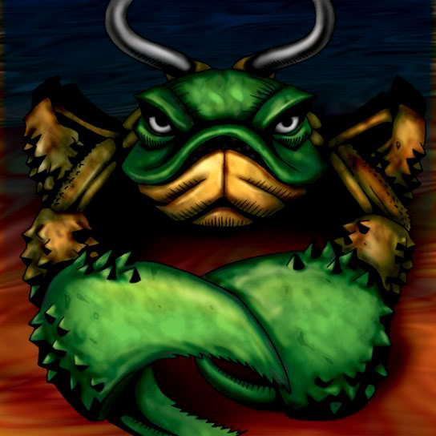

Kanikabuto

STATS
ATK: 650
DEF: 900DECK COST
Deck Cost per Card: 16Fusion List (8 Possible Fusions)
- Kanikabuto + Bolt Penguin = Bolt Escargot
- Kanikabuto + Dragon Zombie = Kairyu-Shin
- Kanikabuto + Electric Lizard = Bolt Escargot
- Kanikabuto + Kairyu-Shin = Sea King Dragon
- Kanikabuto + Mega Thunderball = Bolt Escargot
- Kanikabuto + One-Eyed Shield Dragon = Spike Seadra
- Kanikabuto + Petit Dragon = Spike Seadra
- Kanikabuto + Sword Arm of Dragon = Kairyu-Shin